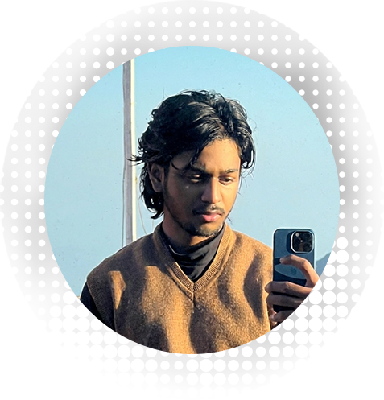

Filmmaker · Photographer · Editor · Colorist
3D Animation · Digital Art · Product Visualization
I spend my days (and a lot of my nights) exploring stories through my passion to create. I love the journey of becoming better—taking what I learn and turning it into something special. Nothing matters as much as the soul of the project. From the first time I picked up a camera to learning the complexities, it’s all been about that one spark: the drive to capture and deliver a feeling. I don’t think I’ll ever stop being a student of the craft; there’s always a new way to see things.